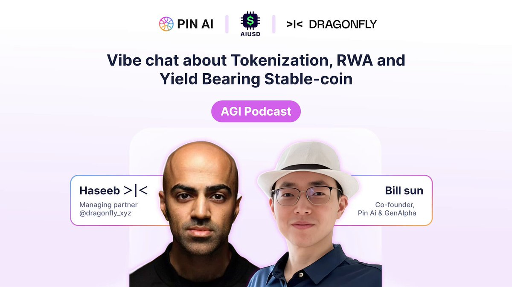
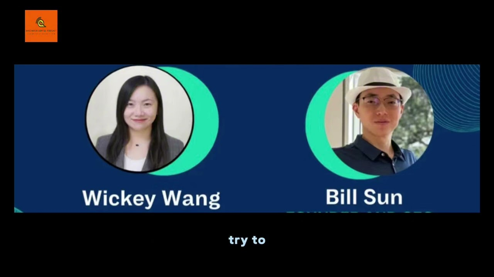
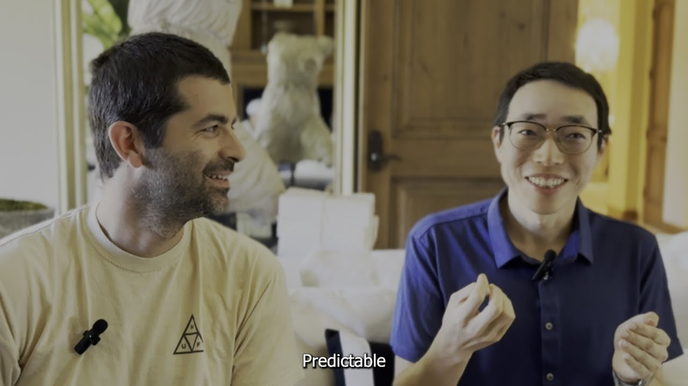
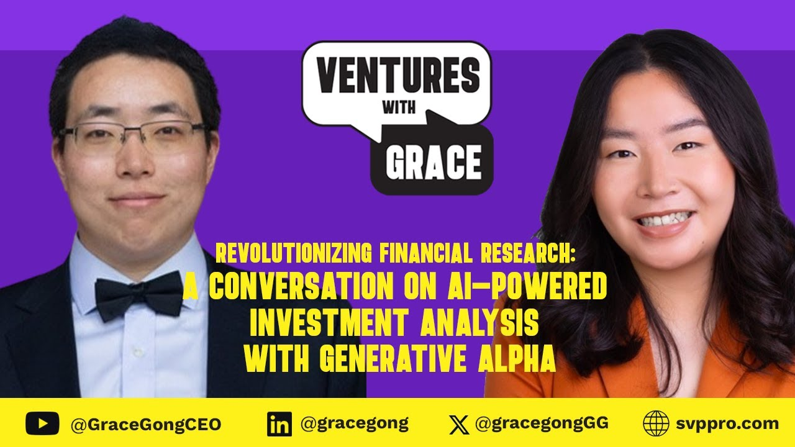
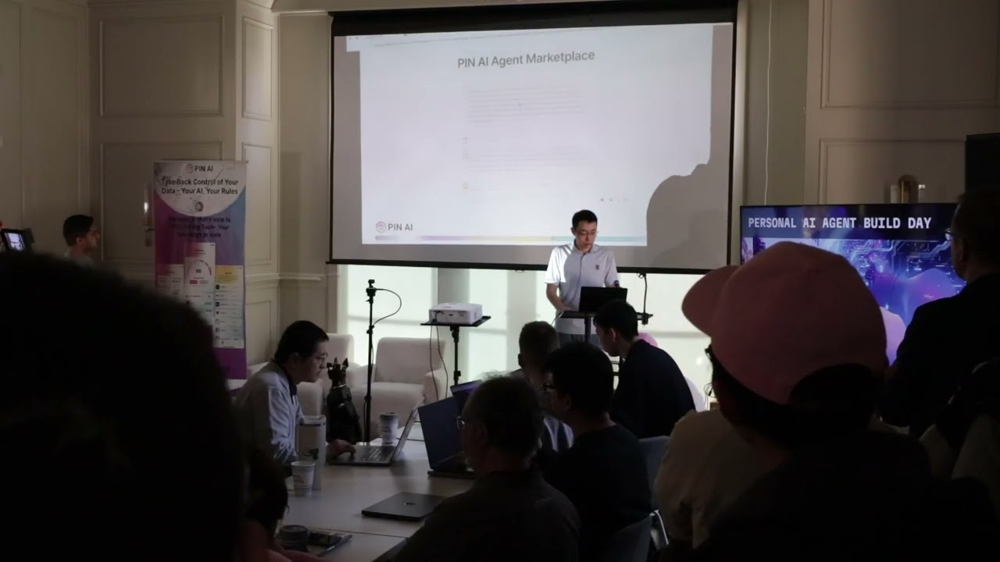
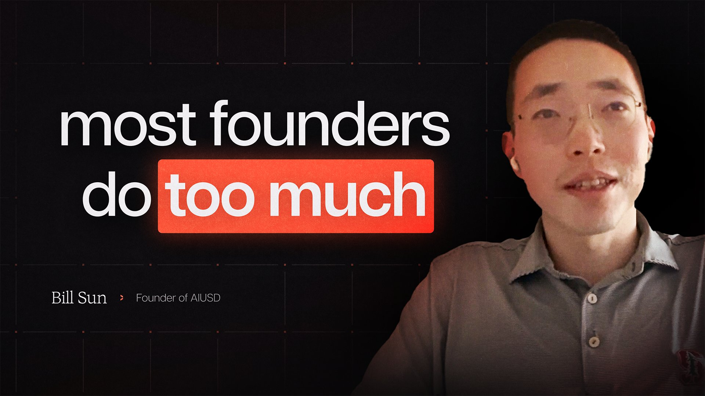
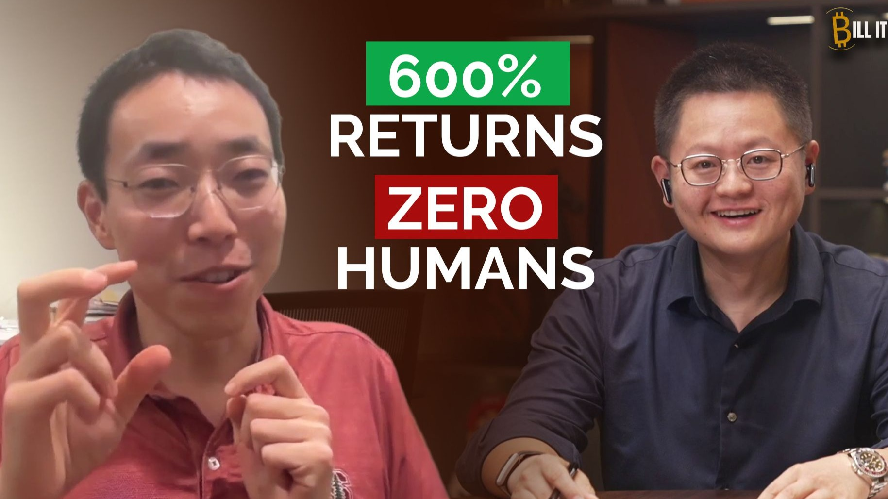
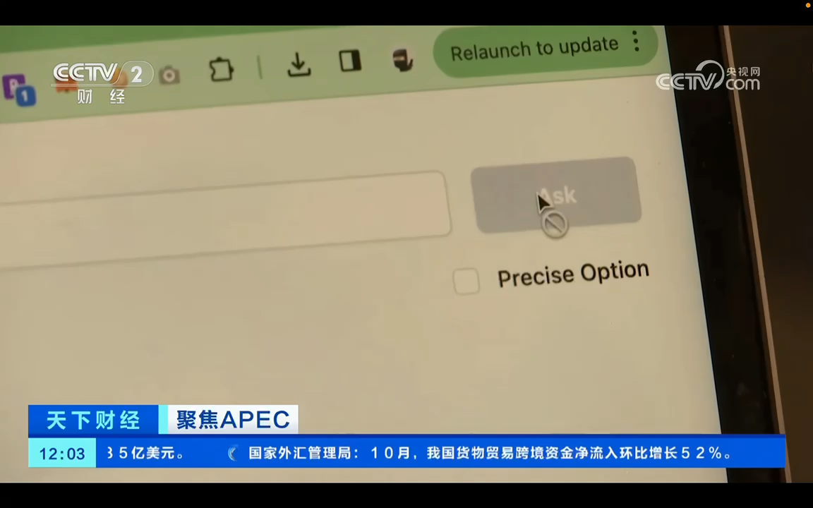
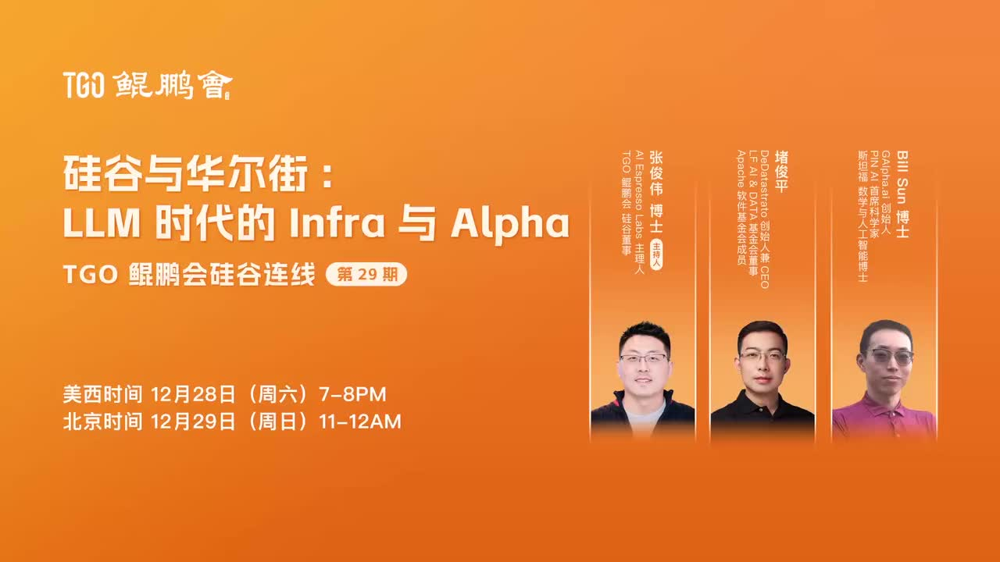

Hosted
Jie Tan / Google DeepMind Robotics
Conversation on robotics, embodied intelligence, and what it takes to ship research into the real world.
Featured English Podcast
English-language hosted conversations and guest appearances across robotics, market structure, crypto infrastructure, trading, and AI startup building.
Top 6
Hosted
Conversation on robotics, embodied intelligence, and what it takes to ship research into the real world.

Hosted
Protocol design, crypto infrastructure, and the operating realities behind high-throughput networks.

Hosted
Conversation on liquidity, stablecoins, tokenized stocks, trust, and crypto market structure in the next phase of digital capital markets.

Guest
A longer-form interview on AI trading systems, Wall Street, and why the product opportunity sits at the intersection of research and execution.


Hosted
Discussion on tokenomics, AI-native capital formation, and where market structure still looks underbuilt.

Hosted
Security, compliance, and why blockchain intelligence still matters once systems leave the demo layer.

Hosted
Protocol performance, system design, and the tradeoffs behind scalable onchain infrastructure.

Hosted
Payments, settlement, and what stablecoins change once they become usable infrastructure rather than narrative.

Hosted
Conversational systems, product infrastructure, and what it takes to move AI agents from demo to durable use case.

Hosted
A short launch-oriented talk on AIUSD and the broader direction of machine-native capital coordination.

Hosted
Short hosted conversation on founder tactics, distribution, and building under tight iteration loops.

Hosted
Hosted conversation on AI-native product workflows, founder speed, and lightweight execution.

Hosted
Hosted conversation on web experimentation, conversion systems, and product loops that compound.

Hosted
Hosted conversation on enterprise AI deployment, document workflows, and reliable automation.

Hosted
Hosted conversation on cryptoeconomic security, restaking, and new market primitives.

Hosted
Hosted conversation on open AI, user ownership, and where aligned model networks could go.

Hosted
Hosted conversation on chain abstraction, AI agents, and coordination infrastructure.

Hosted
Hosted conversation on personal AI, user data, and privacy-preserving agent design.

Hosted
Hosted conversation on programmable IP, attribution, and machine-native media rails.

Guest
Bill Sun at RetrieveX 2024 on reasoning systems, retrieval, and how to build trading agents that can operate with real feedback loops.

Guest
Interview on how Bill Sun connects transformer-era research with AI-driven finance and investment systems.

Guest
Conversation on PIN AI, personal AI, founder execution, and the product direction behind agent-native software.

Guest
Interview on AI-powered investment analysis, autonomous research systems, and where financial AI compounds.

Guest
Talk from AGI House on personal AI agents, hackathon-driven product building, and market infrastructure.

Guest
Interview highlights on transformer origins, Wall Street portfolio management, and founder focus.

Guest
English podcast on the path from hedge funds to AGI, spanning Google Brain, Wall Street, and startup building.
Featured Chinese Podcast
Chinese-language podcast appearances on Anthropic, market design, trading, and AI for investing.
Top 3


Guest
Chinese-language interview clips with Sophia on Clawdbot, agent wallets, trading execution, and Anthropic / Claude models.

Guest
2023 年中文电视采访，聚焦 APEC 期间的硅谷 AI Agent 创业、个人智能体产品，以及面向新一代用户的 AI 交互形态。


Guest
中文对话，讨论 AI Infra、股票、币圈，以及 AI 如何在不同市场里创造 alpha。